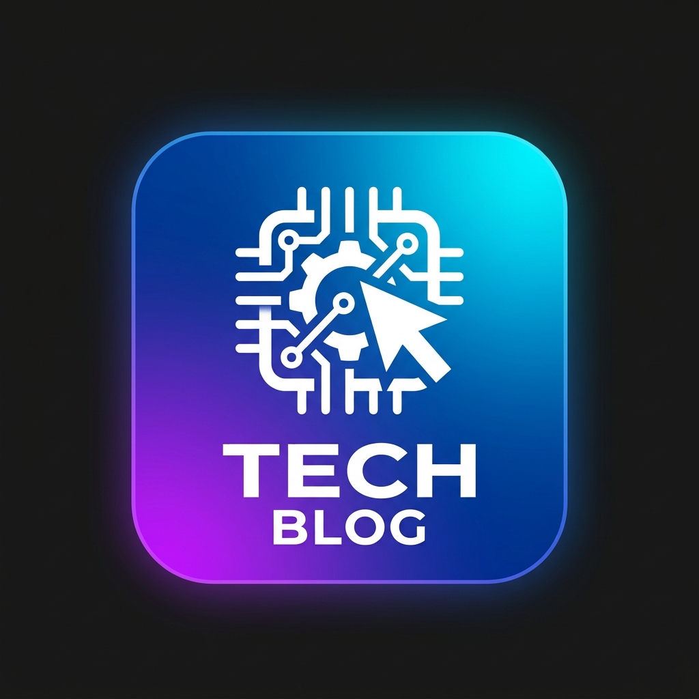

Meu primeiro post
por: Gustavo Oliveira
Boas-vindas ao meu primeiro blog. Vou compartilhar algumas dicas de programação e curiosidades da área de tecnologia
Vou compartilhar conhecimentos sobre tecnologia e programação

por: Gustavo Oliveira
Boas-vindas ao meu primeiro blog. Vou compartilhar algumas dicas de programação e curiosidades da área de tecnologia